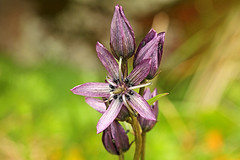
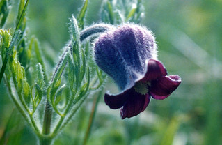
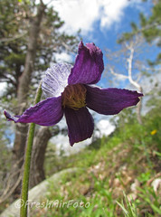
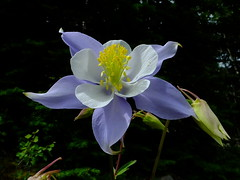
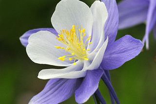

Star Gentian are located in the Rocky Mountain areas in bogs or wet hillsides. They have a beautiful star flowering shape with five petals. The petals with dark purple veins.
The leaves are thing and reach upwards on stalks. these flowers are a very gorgeous mountainus flower I would love to go out and find. :)

Sugarbowls

These flowers have on of th more funky flowers shapes. The are a downwards facing bell shape with hairy petals. Its odd shape makes it easily distintive and it has no similair species ibn the west.
They hang out on thin green/purple stems and can be found in southern rocky mountain areas. Typically hanging out in pine forests, sagebrush, and grassland. My favorite part about these flowers is their even funkier seends. Very hairy with brown sprawling petals after the flower fully matures.

Colorado columbine


This here is the Colorado Sate Flower! For good reason too as the shape of the flower is absolutely gorgeous.
With five purpkle pointed outer petals, five lighter inner toungue shaped petals, and white stamen clusters in the inside this flower has got all the beuaty and complexity you could want.
This is found in the rocky mountains in moist, mountainus regions.